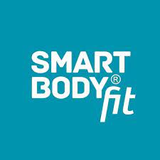
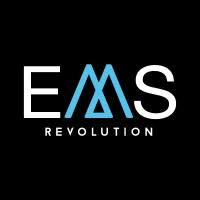
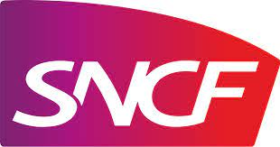

Charlotte JEAN - Online Resume
Contact
You can reach me via the following options:
Summary
Experienced marketing and communications professional with a strong track record in content creation, social media, and crossfunctional project management.
Currently working as a Customer Engagement Lead at Sanofi through the VIE program.
Passionate about pushing the boundaries in digital marketing and communications, I thrive on self-improvement and creative exploration.
International Mobility
- Studied in Lima (PERU).
- Worked in Madrid (SPAIN) and Dublin (IRELAND).
- Volunteered in London (UK) and Phuket (THAILAND)
- Open to work in EUROPE from JANUARY 2024.
Education
-
Video Production - École Grain
100% Online Courses - 01.03.2023-Now
Training in video production, editing, and storytelling, to stay up-to-date with the latest industry trends and techniques for creating compelling visual content.
-
Master's Degree - Excelia Group - La Rochelle, FRANCE
Marketing and Sales Management - 01.09.2017-31.08.2021
Thesis: Challenges of e-health in B2B by 2030 in France.
-
Exchange - Universidad ESAN - Lima, PERU
Administration & Marketing - 07.08.2018-14.07.2019
Courses: Branding, Marketing, Communication, Advertising & Sales Promotion.
Work Experience
-
Customer Engagement Lead - Sanofi - Dublin, IRELAND
VIE Contract - 01.01.2022-31.12.2023
-
Customer Engagement: Creating and implementing the customer engagement plans for key customers.
-
K.O.L. Stakeholder Map: In collaboration with medical affairs and commercial team, lead the validation and development of the key opinion leader stakeholder map.
-
Cross-Functional Orchestration: National Congress contact and cross-functional congress coordination.
-
Omnichannel Engagement Campaigns: Implement and drive omnichannel initiatives in line with marketing on priority brands, inclusive of unbranded campaigns.
-
Salesforce Management: Providing clear communication to the field team and cross-functional colleagues on brand initiatives to compliantly meet salesforce requirements.
-
Campus Website: Successfully led the briefing and content supply process for creative agency projects, maintained ongoing communication with regular touchpoints, and meticulously verified compliance and accuracy for projects on the Irish website.
-
 Product Manager in Financial Savings - Société Générale - Paris, FRANCE
Product Manager in Financial Savings - Société Générale - Paris, FRANCE
Apprenticeship / Work-Study Track - 01.09.2020-31.08.2021
-
Market Research: Conducted market research and competitive analysis to stay updated on stock exchange trends, competitor offerings, and customer preferences.
-
Product Development: Assisted in the development of new financial savings and stocks products or services by collaborating with cross-functional teams (product managers, IT, compliance, and legal departments).
-
Digital Documentation: Prepared and maintained documentation related to product specifications, requirements, and regulatory compliance.
-
Retail Marketing: Designed and developed presentations and marketing materials.
-
 Digital Marketing Lead - SmartBodyFit - Madrid, SPAIN
Gap Year - 6 months internship - 01.03.2020-31.08.2020
-
Digital Marketing Strategy: Developed and executed digital marketing strategies to promote the products and the brand. Created and managed online advertising campaigns, content marketing, SEO, email marketing, and social media marketing.
-
Content Creation and Copywriting: Created high-quality, engaging content for various digital channels. Wrote blog posts, product descriptions, email newsletters, social media updates, and other marketing materials.
-
International Expansion: For French-speaking and English-speaking areas, I have been responsible for adapting marketing strategies to suit different cultural and regulatory environments.
-
E-commerce Management: Managed the website where the products were sold, including translating all content, adding information, and monitoring key e-commerce metrics.
-
 International Business Developer - EMS Revolution - Madrid, SPAIN
Gap Year - 6 months internship - 26.08.2019-28.02.2020
-
Blog Launch & Management: On the WordPress website, I wrote and translated articles to cater to a global audience, as well as managed and curated engaging content.
-
Digital Marketing & Communications Strategies: Drove brand awareness and audience engagement, as well as conducted SEO optimization and social media campaigns
-
Website Content Management and Optimization: Proofread and organized the entire website's content, recruited and managed freelancers for content review and translation.
-
Customer-Centric Improvements: Provided valuable insights and recommendations based on customer feedback and market research, and also contributed to revenue growth by enhancing customer engagement and conversion rates
-
 Commercial Communications & Partnerships Assistant - SNCF - Nantes, FRANCE
Gap Year - 6 months internship - 01.03.2020-31.08.2020
-
Communication Support: Created and disseminated commercial communications (email marketing campaigns and social media content), ensuring consistent branding.
-
Content Creation: Developed marketing materials (brochures, flyers, presentations, and website content), and participated in the design and implementation of the relationship marketing plan.
-
Webserie Project: Managed a transversal project with the audiovisual production agency and internal stakeholders to give exposure to the jobs within SNCF (train driver, ticket inspector, station agent, etc.) via short videos and interviews for the public.
-
Partnerships Development: Assisted in identifying potential partnership opportunities with local sports organizations and tourism offices.
-
Event Coordination: Helped to plan and coordinate promotional sports events (logistics, promotional materials, and post-event analysis).
Hard Skills
-
DIGITAL MARKETING:
- SEO (Semrush, Ahrefs, Google Ads)
- Content Marketing
- Email Marketing
- Social Media Marketing
- Marketing Automation (Brevo, MailChimp)
-
GRAPHIC DESIGN & MULTIMEDIA:
- Adobe CS (Photoshop, Illustrator, InDesign)
- Figma, Canva
- Video Editing (Premiere Pro, CapCut)
- Basic Knowledge of HTML & CSS (VS Code)
-
WEB & CONTENT MANAGEMENT:
- WordPress
- PrestaShop
- Content Creation and Editing
- A/B Testing & Optimization
-
DATA ANALYSIS:
- Excel & Google Sheets
- Data visualization tools (Tableau, Qlik)
- Market Research & Competitive Analysis
Soft Skills
-
COMMUNICATION:
- Strong written & verbal communication
- Copywriting & content creation
-
CREATIVITY:
- Think outside the box
- Generating innovative marketing ideas
- Design thinking
-
PROJECT MANAGEMENT:
- Organization and time management
- Managing multiple campaigns or projects simultaneously
- Problem solving
-
TEAMWORK:
- Working with cross-functional teams
-
CUSTOMER FOCUS:
- Understanding target audiences & customer personas
- Customer-centric approach
Volunteering
Languages
- French: Mother tongue
Other accomplishments
Hobbies
References